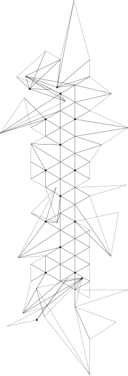
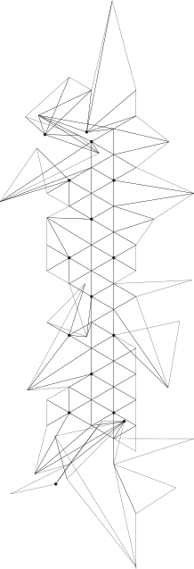

Polityka prywatności
1. Informacje ogólne
- Niniejsza polityka dotyczy Serwisu www, funkcjonującego pod adresem url: facelab.pl
- Operatorem serwisu oraz Administratorem danych osobowych jest: Face-Clinic ul. Łuczek 4, 02-434 Warszawa
- Operator jest Administratorem Twoich danych osobowych w odniesieniu do danych podanych dobrowolnie w Serwisie.
- Serwis wykorzystuje dane osobowe w następujących celach:
- Prowadzenie newslettera
- Obsługa zapytań przez formularz
- Obsługa zamówień towarów - przygotowanie, pakowanie, wysyłka
- Realizacja zamówionych usług
- Obsługa odpowiednich dokumentów księgowych
- Windykacja należności
- Prezentacja oferty lub informacji
- Wykonanie przez Administratora danych osobowych prawnie ciążących na nim obowiązków zgodnie z art. 6 ust. 1 lit. c) RODO w zakresie w jakim przewidują to przepisy szczególne (np. prowadzenie księgowości).
- Serwis realizuje funkcje pozyskiwania informacji o użytkownikach i ich zachowaniu w następujący sposób:
- Poprzez dobrowolnie wprowadzone w formularzach dane, które zostają wprowadzone do systemów Operatora.
- Poprzez zapisywanie w urządzeniach końcowych plików cookie (tzw. „ciasteczka”).
3. Hosting
- Serwis jest hostowany (technicznie utrzymywany) na serwera operatora: cyberFolks.pl
4. Twoje prawa i dodatkowe informacje o sposobie wykorzystania danych
- W niektórych sytuacjach Administrator ma prawo przekazywać Twoje dane osobowe innym odbiorcom, jeśli będzie to niezbędne do wykonania zawartej z Tobą umowy lub do zrealizowania obowiązków ciążących na Administratorze. Dotyczy to takich grup odbiorców:
- osoby upoważnione przez nas, pracownicy i współprcownicy, którzy muszą mieć dostęp do danych osobowych w celu wykonywania swoich obowiązków,
- firma hostingowa,
- firmy obsługująca mailingi,
- firmy obsługująca komunikaty SMS,
- firmy, z którymi Administrator współpracuje w zakresie marketingu własnego,
- kurierzy,
- ubezpieczyciele,
- kancelarie prawne i windykatorzy,
- banki,
- operatorzy płatności,
- organy publiczne.
- Twoje dane osobowe przetwarzane przez Administratora nie dłużej, niż jest to konieczne do wykonania związanych z nimi czynności określonych osobnymi przepisami (np. o prowadzeniu rachunkowości). W odniesieniu do danych marketingowych dane nie będą przetwarzane dłużej niż przez 3 lata.
- Przysługuje Ci prawo żądania od Administratora:
- dostępu do danych osobowych Ciebie dotyczących,
- ich sprostowania,
- usunięcia,
- ograniczenia przetwarzania,
- oraz przenoszenia danych.
- Przysługuje Ci prawo do złożenia sprzeciwu w zakresie przetwarzania wskazanego w pkt 3.3 c) wobec przetwarzania danych osobowych w celu wykonania prawnie uzasadnionych interesów realizowanych przez Administratora, w tym profilowania, przy czym prawo sprzeciwu nie będzie mogło być wykonane w przypadku istnienia ważnych prawnie uzasadnionych podstaw do przetwarzania, nadrzędnych wobec Ciebie interesów, praw i wolności, w szczególności ustalenia, dochodzenia lub obrony roszczeń.
- Na działania Administratora przysługuje skarga do Prezesa Urzędu Ochrony Danych Osobowych, ul. Stawki 2, 00-193 Warszawa.
- Podanie danych osobowych jest dobrowolne, lecz niezbędne do obsługi Serwisu.
- W stosunku do Ciebie mogą być podejmowane czynności polegające na zautomatyzowanym podejmowaniu decyzji, w tym profilowaniu w celu świadczenia usług w ramach zawartej umowy oraz w celu prowadzenia przez Administratora marketingu bezpośredniego.
- Dane osobowe nie są przekazywane od krajów trzecich w rozumieniu przepisów o ochronie danych osobowych. Oznacza to, że nie przesyłamy ich poza teren Unii Europejskiej.
5. Informacje w formularzach
- Serwis zbiera informacje podane dobrowolnie przez użytkownika, w tym dane osobowe, o ile zostaną one podane.
- Serwis może zapisać informacje o parametrach połączenia (oznaczenie czasu, adres IP).
- Serwis, w niektórych wypadkach, może zapisać informację ułatwiającą powiązanie danych w formularzu z adresem e-mail użytkownika wypełniającego formularz. W takim wypadku adres e-mail użytkownika pojawia się wewnątrz adresu url strony zawierającej formularz.
- Dane podane w formularzu są przetwarzane w celu wynikającym z funkcji konkretnego formularza, np. w celu dokonania procesu obsługi zgłoszenia serwisowego lub kontaktu handlowego, rejestracji usług itp. Każdorazowo kontekst i opis formularza w czytelny sposób informuje, do czego on służy.
6. Logi Administratora
- Informacje zachowaniu użytkowników w serwisie mogą podlegać logowaniu. Dane te są wykorzystywane w celu administrowania serwisem.
7. Istotne techniki marketingowe
- Operator stosuje analizę statystyczną ruchu na stronie, poprzez Google Analytics (Google Inc. z siedzibą w USA). Operator nie przekazuje do operatora tej usługi danych osobowych, a jedynie zanonimizowane informacje. Usługa bazuje na wykorzystaniu ciasteczek w urządzeniu końcowym użytkownika. W zakresie informacji o preferencjach użytkownika gromadzonych przez sieć reklamową Google użytkownik może przeglądać i edytować informacje wynikające z plików cookies przy pomocy narzędzia: https://www.google.com/ads/preferences/
8. Informacja o plikach cookies
- Serwis korzysta z plików cookies.
- Pliki cookies (tzw. „ciasteczka”) stanowią dane informatyczne, w szczególności pliki tekstowe, które przechowywane są w urządzeniu końcowym Użytkownika Serwisu i przeznaczone są do korzystania ze stron internetowych Serwisu. Cookies zazwyczaj zawierają nazwę strony internetowej, z której pochodzą, czas przechowywania ich na urządzeniu końcowym oraz unikalny numer.
- Podmiotem zamieszczającym na urządzeniu końcowym Użytkownika Serwisu pliki cookies oraz uzyskującym do nich dostęp jest operator Serwisu.
- Pliki cookies wykorzystywane są w następujących celach:
- utrzymanie sesji użytkownika Serwisu (po zalogowaniu), dzięki której użytkownik nie musi na każdej podstronie Serwisu ponownie wpisywać loginu i hasła;
- realizacji celów określonych powyżej w części "Istotne techniki marketingowe";
- W ramach Serwisu stosowane są dwa zasadnicze rodzaje plików cookies: „sesyjne” (session cookies) oraz „stałe” (persistent cookies). Cookies „sesyjne” są plikami tymczasowymi, które przechowywane są w urządzeniu końcowym Użytkownika do czasu wylogowania, opuszczenia strony internetowej lub wyłączenia oprogramowania (przeglądarki internetowej). „Stałe” pliki cookies przechowywane są w urządzeniu końcowym Użytkownika przez czas określony w parametrach plików cookies lub do czasu ich usunięcia przez Użytkownika.
- Oprogramowanie do przeglądania stron internetowych (przeglądarka internetowa) zazwyczaj domyślnie dopuszcza przechowywanie plików cookies w urządzeniu końcowym Użytkownika. Użytkownicy Serwisu mogą dokonać zmiany ustawień w tym zakresie. Przeglądarka internetowa umożliwia usunięcie plików cookies. Możliwe jest także automatyczne blokowanie plików cookies Szczegółowe informacje na ten temat zawiera pomoc lub dokumentacja przeglądarki internetowej.
- Ograniczenia stosowania plików cookies mogą wpłynąć na niektóre funkcjonalności dostępne na stronach internetowych Serwisu.
- Pliki cookies zamieszczane w urządzeniu końcowym Użytkownika Serwisu wykorzystywane mogą być również przez współpracujące z operatorem Serwisu podmioty, w szczególności dotyczy to firm: Google (Google Inc. z siedzibą w USA), Facebook (Facebook Inc. z siedzibą w USA), Twitter (Twitter Inc. z siedzibą w USA).
9. Zarządzanie plikami cookies – jak w praktyce wyrażać i cofać zgodę?
- Jeśli użytkownik nie chce otrzymywać plików cookies, może zmienić ustawienia przeglądarki. Zastrzegamy, że wyłączenie obsługi plików cookies niezbędnych dla procesów uwierzytelniania, bezpieczeństwa, utrzymania preferencji użytkownika może utrudnić, a w skrajnych przypadkach może uniemożliwić korzystanie ze stron www
- W celu zarządzania ustawienia cookies wybierz z listy poniżej przeglądarkę internetową, której używasz i postępuj zgodnie z instrukcjami:
- Urządzenia mobilne:


 
